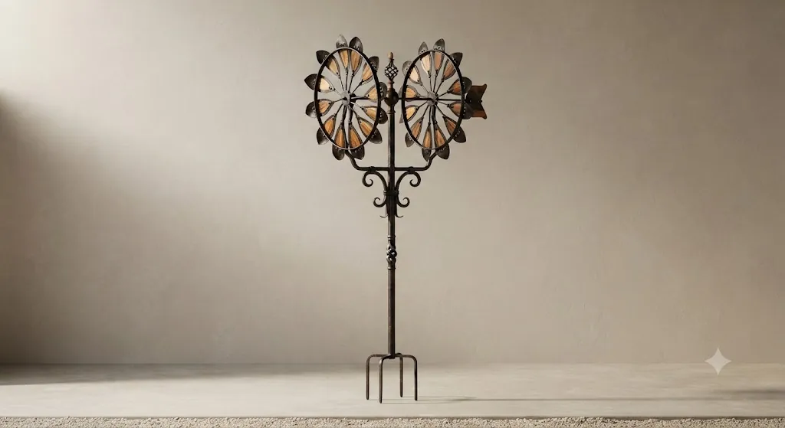

AA-GD-340 · Cat 34
Cast-Iron Garden Windmill Spinner (Kinetic)
Weather-resistant Yard Art design tailored for Plow & Hearth, Amazon retail collections.
$22.00 – $29.00 FOB Mundra · per unit · MOQ 50 Pcs
| Material & construction | Dual counter-rotating ball-bearing iron petal wheels mounted on 4-prong ground fork |
|---|---|
| Dimensions | Dia 24" x 74" H / Dia 61 x 188 cm |
| Carton volume | 0.040 CBM / unit |
| Minimum order | 50 Pcs |
| Lead time | 45–60 Days (FOB Mundra) |
| Western retail benchmark | $110 – $160 |
| Style | Yard Art |
| Indicative HS heading | 4420.90 — Wooden boxes, cases & ornaments |
| Typical buyers | Plow & Hearth, Amazon |
Indicative HS heading only — your customs broker confirms final classification. Kiln-dried 8–10% moisture, ISPM-15 dunnage, VRIKSH / Lacey / EUDR paperwork on request.